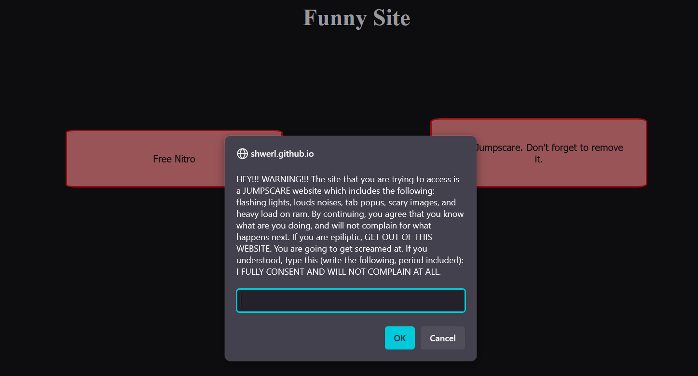

In conclusion
I am an aspiring high school, Kazakh student and Web Developer/Musician who is initiative and has a tendency to explore new activities and aims for very ambitious goals.

Aspiring Web Developer • Learner • Musician
I’m a 11th grader, high school student from Kazakhstan with a passion for web development and music.
I love building small, creative web sites and learning new tools. Currently preparing for
the SAT (scored 1290, 630RW and 660M, on the last practice test) and planning to major in Computer Science.
My main goal is to get admitted into Nazarbayev University, and work remotely as a Software Developer.
I built this website to scare my friends, using JS, DOM Manipulation, and CSS anims within a week!
I managed to earn $100+ via creating OSTs for videogame mods online to foreign clients.
I am an aspiring high school, Kazakh student and Web Developer/Musician who is initiative and has a tendency to explore new activities and aims for very ambitious goals.